Thm-Intro to Digital Forensics
最后更新时间:
文章总字数:
预计阅读时间:
0x01 Task1-数字取证简介
了解数字取证和相关流程并通过实际示例进行实验。
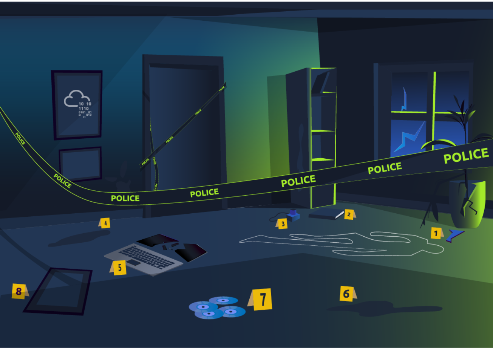
法证学是应用科学来调查犯罪并确定事实的学科。随着计算机和智能手机等数字系统的使用和普及，一个新的取证学分支诞生了，用于调查相关犯罪：计算机取证，后来演变为数字取证。
考虑以下场景。执法人员到达犯罪现场；然而，该犯罪现场的一部分包括数字设备和媒体。数字设备包括台式电脑、笔记本电脑、数码相机、音乐播放器和智能手机等。数字媒体包括 CD、DVD、USB 闪存驱动器和外部存储设备。出现几个问题：
- How should the police collect digital evidence, such as smartphones and laptops? What are the procedures to follow if the computer and smartphone are running?
警方应如何收集智能手机和笔记本电脑等数字证据？如果计算机和智能手机正在运行，应遵循哪些步骤？ - How to transfer the digital evidence? Are there certain best practices to follow when moving computers, for instance?
数字证据如何传输？例如，在移动计算机时是否需要遵循某些最佳实践？ - How to analyze the collected digital evidence? Personal device storage ranges between tens of gigabytes to several terabytes; how can this be analyzed?
如何分析收集到的数字证据？个人设备存储范围从几十GB到几TB；这该如何分析呢？
假设上图中这名员工被怀疑，我们可以很快看到调查可能感兴趣的数字设备。除了台式电脑之外，我们还注意到平板电脑、智能手机、数码相机和 USB 闪存。这些设备中的任何一个都可能包含大量有助于调查的信息。将这些作为证据处理需要数字取证。
更正式地说，数字取证是计算机科学的应用，旨在出于法律目的调查数字证据。数字取证用于两种类型的调查：
- Public-sector investigations refer to the investigations carried out by government and law enforcement agencies. They would be part of a crime or civil investigation.
公共部门调查是指政府和执法机构进行的调查。他们将成为犯罪或民事调查的一部分。 - Private-sector investigations refer to the investigations carried out by corporate bodies by assigning a private investigator, whether in-house or outsourced. They are triggered by corporate policy violations.
私营部门调查是指法人机构指派私人调查员（无论是内部调查员还是外包调查员）进行的调查。它们是由违反公司政策引发的。
无论是调查犯罪还是违反公司政策，部分证据都与数字设备和数字媒体有关。这就是数字取证发挥作用并试图确定发生了什么的地方。如果没有训练有素的数字取证调查员，就不可能正确处理任何数字证据。

问题一：
由上图我们看到有一个笔记本电脑
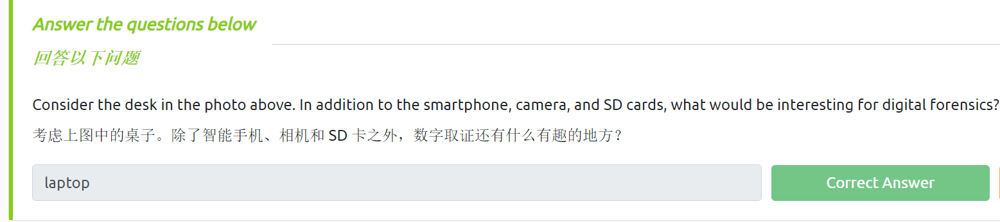
0x02 Task2-数字取证过程
作为一名数字取证调查员，您会看到与上图所示类似的场景。作为数字取证调查员，您应该做什么？获得适当的法律授权后，基本计划如下：
- Acquire the evidence: Collect the digital devices such as laptops, storage devices, and digital cameras. (Note that laptops and computers require special handling if they are turned on; however, this is outside the scope of this room.)
获取证据：收集笔记本电脑、存储设备、数码相机等数字设备。 （请注意，笔记本电脑和计算机在打开时需要特殊处理；但是，这超出了本房间的范围。） - Establish a chain of custody: Fill out the related form appropriately (Sample form). The purpose is to ensure that only the authorized investigators had access to the evidence and no one could have tampered with it.
建立监管链：正确填写相关表格（样本表格）。目的是确保只有经过授权的调查人员才能获取证据，并且任何人都无法篡改证据。 - Place the evidence in a secure container: You want to ensure that the evidence does not get damaged. In the case of smartphones, you want to ensure that they cannot access the network, so they don’t get wiped remotely.
将证据放在安全的容器中：您要确保证据不会损坏。对于智能手机，您需要确保它们无法访问网络，这样它们就不会被远程擦除。 - Transport the evidence to your digital forensics lab.
将证据传输到您的数字取证实验室。
在实验室，过程如下：
- Retrieve the digital evidence from the secure container.
从安全容器中检索数字证据。 - Create a forensic copy of the evidence: The forensic copy requires advanced software to avoid modifying the original data.
创建证据的取证副本：取证副本需要先进的软件以避免修改原始数据。 - Return the digital evidence to the secure container: You will be working on the copy. If you damage the copy, you can always create a new one.
将数字证据返回到安全容器：您将处理副本。如果您损坏了副本，您随时可以创建一个新副本。 - Start processing the copy on your forensics workstation.
开始在取证工作站上处理副本。
上述步骤改编自《计算机取证和调查指南》第 6 版。
更一般地说，根据国防计算机取证实验室前主任 Ken Zatyko 的说法，数字取证包括：
- 适当的搜查授权：如果没有适当的法律授权，调查人员就无法开始搜查。
- 监管链：这对于随时跟踪谁持有证据是必要的。
- 用数学验证：使用一种特殊的数学函数（称为哈希函数），我们可以确认文件未被修改。
- 使用经过验证的工具：数字取证中使用的工具应经过验证，以确保它们正常工作。例如，如果您要创建磁盘映像，您需要确保取证映像与磁盘上的数据相同。
- 可重复性：只要有适当的技能和工具，数字取证的结果就可以重现。
- 报告：数字取证调查以一份报告结束，该报告显示与所发现的案件相关的证据。
问题二：
必须随时跟踪谁在处理该案件，以确保证据在法庭上得到采信。有助于建立这一点的文档的名称是什么？
很明显是监管链
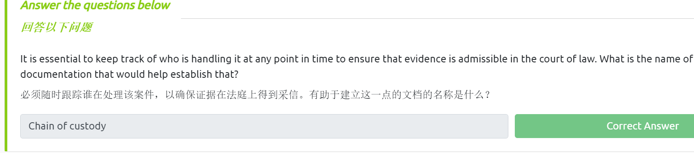
0x03 Task3-数字取证的实际示例
我们在数字设备（从智能手机到计算机）上所做的一切都会留下痕迹。让我们看看在后续的调查中如何使用它。
我们的猫加多被绑架了。绑匪已向我们发送了一份 MS Word 文档格式的文件，其中包含他们的请求。为了您的方便，我们已将文档转换为 PDF 格式，并从 MS Word 文件中提取图像。
您可以将附件下载到本地机器进行检查；但是，为了您的方便，我们已将文件添加到 AttackBox 中。要继续操作，请打开 AttackBox 上的终端，然后转到目录 /root/Rooms/introdigitalforensics ，如下所示。在以下终端输出中，我们更改为包含案例文件的目录。
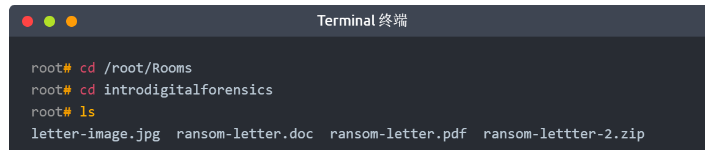
Document Metadata 文档元数据
当您创建文本文件 TXT 时，操作系统会保存一些元数据，例如文件创建日期和上次修改日期。但是，当您使用更高级的编辑器（例如 MS Word）时，许多信息会保留在文件的元数据中。读取文件元数据的方式有多种；您可以在其官方查看器/编辑器中打开它们或使用合适的取证工具。请注意，将文件导出为其他格式（例如 PDF ）将保留原始文档的大部分元数据，具体取决于所使用的 PDF 编写器。
让我们看看我们能从 PDF 文件中了解到什么。我们可以尝试使用程序 pdfinfo 读取元数据。 Pdfinfo 显示与 PDF 文件相关的各种元数据，例如标题、主题、作者、创建者和创建日期。 （AttackBox 已经安装了 pdfinfo ；但是，如果您使用 Kali Linux 并且没有安装 pdfinfo ，则可以使用 sudo apt install poppler-utils 安装它。）考虑以下使用 pdfinfo DOCUMENT.pdf 的示例。
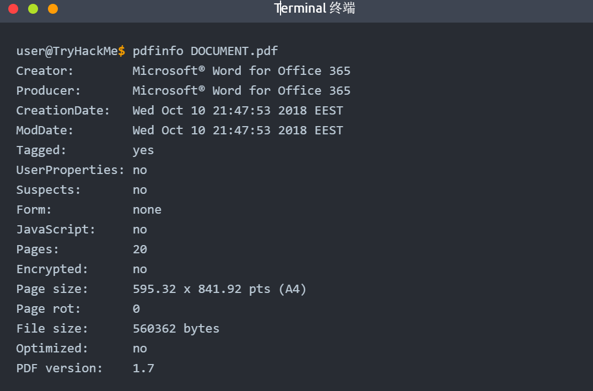
PDF 元数据清楚地表明它是于 2018 年 10 月 10 日使用 MS Word for Office 365 创建的。
问题三：
使用 pdfinfo 查找所附 PDF 文件的作者。
这里呢我们可以在kali上进行操作，前提是要下载该房间所给的附件，不过也可以直接打开room自带的虚拟机直接操作，这里我用自带的
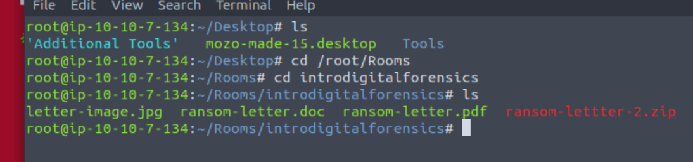
我们打开终端进入指定目录，如上图，其中包含三个文档，我们需要用pdfinfo命令来查看元数据
1 | |
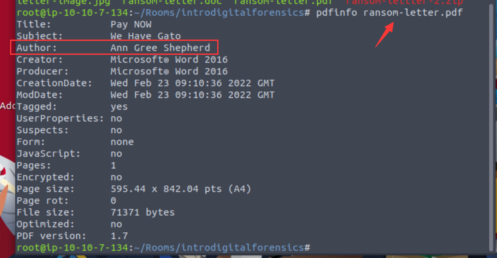
如上图，成功找到文档作者信息
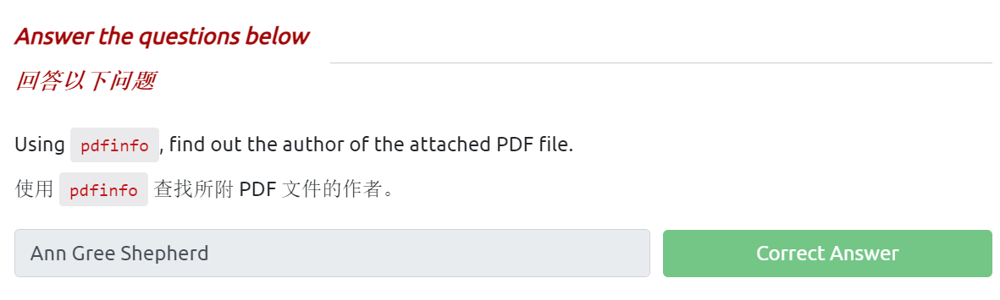
Photo EXIF Data 照片 EXIF 数据
EXIF 代表可交换图像文件格式；它是将元数据保存到图像文件的标准。每当您使用智能手机或数码相机拍照时，图像中都会嵌入大量信息。以下是可以在原始数字图像中找到的元数据的示例：
- Camera model / Smartphone model
相机型号/智能手机型号 - Date and time of image capture
图像捕捉的日期和时间 - Photo settings such as focal length, aperture, shutter speed, and ISO settings
照片设置，例如焦距、光圈、快门速度和 ISO 设置
由于智能手机配备了 GPS 传感器，因此很有可能找到嵌入在图像中的 GPS 坐标。 GPS坐标，即纬度和经度，通常会显示照片拍摄的地点。
有许多在线和离线工具可以从图像中读取 EXIF 数据。一种命令行工具是 exiftool 。 ExifTool 用于读取和写入各种文件类型（例如 JPEG 图像）中的元数据。 （AttackBox 已经安装了 exiftool ；但是，如果您使用 Kali Linux 并且没有安装 exiftool ，则可以使用 sudo apt install libimage-exiftool-perl 安装它。）在下面的终端窗口中，我们执行 exiftool IMAGE.jpg 来读取该图像中嵌入的所有 EXIF 数据。
1 | |
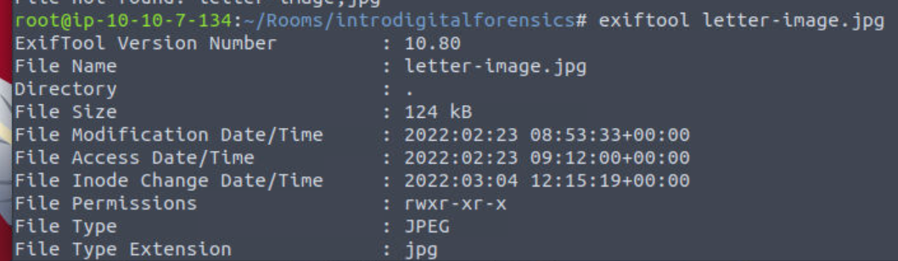
如上图，我们成功读取到exif数据
问题四：
如果您使用上述坐标并搜索一张在线地图，您将了解有关该位置的更多信息。在 Microsoft Bing 地图或 Google 地图中搜索 51° 31' 4.00" N, 0° 5' 48.30" W 显示这些坐标表明该图像是在伦敦博物馆附近拍摄的。 （我们仅将 deg 替换为 ° 以使搜索正常工作。）我们注意到搜索页面上的坐标已转换为十进制表示形式： 51.517776, -0.09675 。
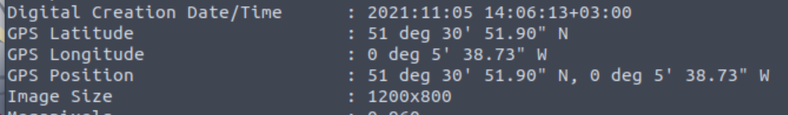
如上图，我们可以找到GPS位置
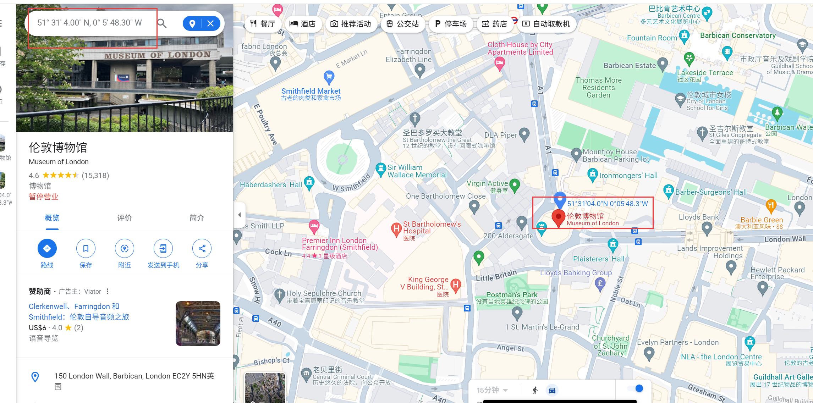
进入谷歌地图找到位置是伦敦博物馆附近
使用 exiftool 或任何类似工具，尝试查找绑匪在何处获取了附加到文档中的图像。街道的名称是什么？
我们将上图的坐标转换至下列：
51°30' 51.90" N, 0°5' 38.73" W–进入谷歌地图搜索
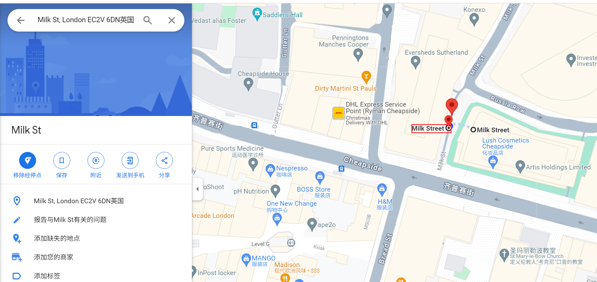
找到街道名称
下图是使用exiftool对doc文档的信息查看，发现相机型号
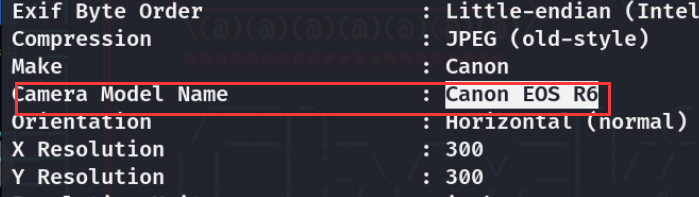
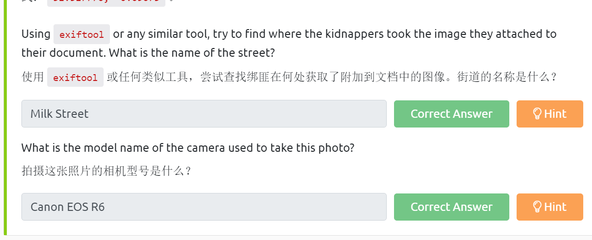